Steady-State Errors in Feedback Control Systems
Control 7
Imron Rosyadi
Learning Objectives
By the end of this lecture, you will be able to:
- Define steady-state error for standard test inputs (step, ramp, parabola).
- Compute steady-state error from the closed-loop transfer function \(T(s)\).
- Compute steady-state error from the open-loop transfer function \(G(s)\) for unity feedback.
- Relate steady-state error to:
- Static error constants \(K_p, K_v, K_a\)
- System type (Type 0, 1, 2, …)
- Number of integrators in the forward path
- Use steady-state error specifications to select gain \(K\).
- Analyze how disturbances affect steady-state error and how to reduce it.
7.1 Why Steady-State Error Matters
Control design typically balances:
- Transient response (speed, overshoot)
- Stability (bounded response)
- Steady-state accuracy (how close output is to input as \(t \to \infty\))
In real ECE systems:
- Antenna pointing at a satellite must not “settle” with a 5° offset.
- Robot arm placing chips on a PCB must not have a 0.5 mm final offset.
- Motor speed controller must maintain constant speed under load changes.
Steady-state error quantifies how much mismatch remains after transients die out.
Important
Key idea: Even a stable system with “nice” transients can have unacceptable steady-state error.
Definition of Steady-State Error
For a (stable) feedback system:
- Input: \(r(t)\)
- Output: \(c(t)\)
- Error: \(e(t) = r(t) - c(t)\)
Steady-state error:
\[ e_{ss} = e(\infty) = \lim_{t \to \infty} e(t) \]
We evaluate \(e_{ss}\) using standard test inputs that model physical motion of a position system:
- Step: constant position
- Ramp: constant velocity
- Parabola: constant acceleration
TABLE 7.1 – Test Inputs
| Name | Time function | Laplace |
|---|---|---|
| Step | \(1\) | \(\dfrac{1}{s}\) |
| Ramp | \(t\) | \(\dfrac{1}{s^2}\) |
| Parabola | \(\dfrac{t^2}{2}\) | \(\dfrac{1}{s^3}\) |
Visualizing the Test Inputs
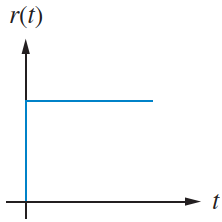
Step input: constant position command
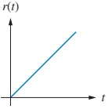
Ramp input: linearly increasing position (constant velocity target)
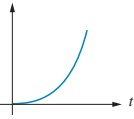
Parabolic input: accelerating target (constant acceleration)
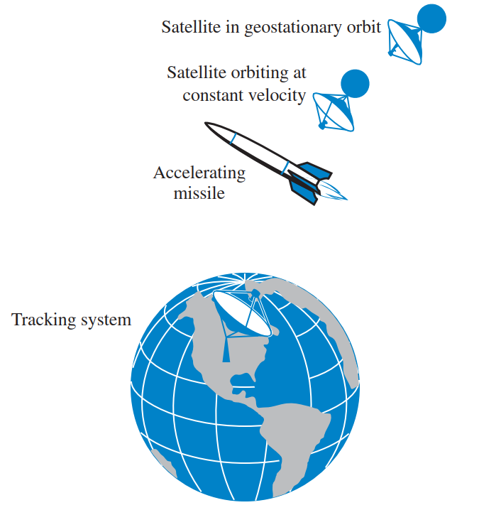
Steady-State Error Requires Stability
We focus on stable systems:
- Natural response → \(0\) as \(t \to \infty\)
- Eventually only forced response remains
- Makes sense to talk about a finite steady-state value
Unstable systems:
- Natural response grows without bound
- Output dominates input
- “Steady-state error” formulas from this chapter do not apply
Warning
Always check closed-loop stability before trusting any steady-state error calculation.
How Do We “See” Steady-State Error?
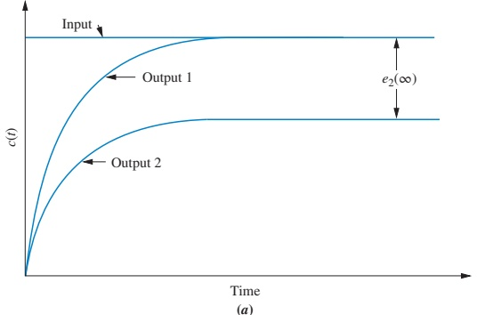
- For a step input:
- Output 1: output converges exactly to input → \(e_{ss} = 0\)
- Output 2: output converges to a different constant → finite \(e_{ss}\)
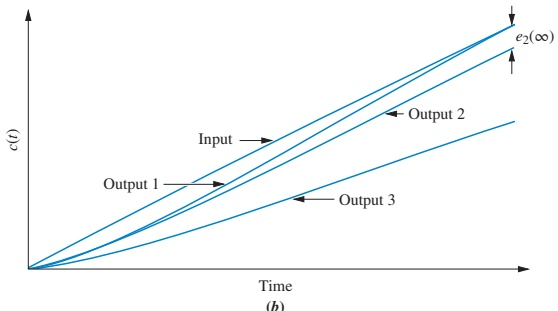
- For a ramp input:
- Output 1: slope and offset match → \(e_{ss} = 0\)
- Output 2: same slope, different offset → finite \(e_{ss}\)
- Output 3: different slope → error grows without bound → \(e_{ss} = \infty\)
General Closed-Loop View of Error
General closed-loop system
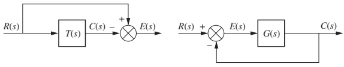
- Closed-loop transfer: \(T(s) = \dfrac{C(s)}{R(s)}\)
- Error: \(E(s) = R(s) - C(s)\)
Unity feedback case
Same diagram with \(H(s)=1\):
- \(E(s) = R(s) - C(s)\)
- \(C(s) = E(s) G(s)\)
- Focus in Sections 7.2–7.4: unity feedback systems
7.2 Steady-State Error in Terms of \(T(s)\)
From the general block diagram:
- \(E(s) = R(s) - C(s)\)
- \(C(s) = T(s) R(s)\)
So:
\[ E(s) = R(s) - T(s) R(s) = R(s) \bigl[1 - T(s)\bigr] \]
To find steady-state error: apply the final value theorem
\[ e(\infty) = \lim_{t \to \infty} e(t) = \lim_{s \to 0} s E(s) \]
Thus:
\[ e(\infty) = \lim_{s \to 0} s R(s) \bigl[1 - T(s)\bigr] \]
Tip
Use this form when \(T(s)\) is given directly and the system is known to be stable.
Example 7.1 – Error from \(T(s)\)
Problem
Given closed-loop transfer function:
\[ T(s) = \frac{5}{s^2 + 7s + 10} \]
Find the steady-state error for a unit step input.
Solution
Step input: \(R(s) = \dfrac{1}{s}\)
- Compute \(E(s)\):
\[ E(s) = R(s) \bigl[1 - T(s)\bigr] = \frac{1}{s} \left(1 - \frac{5}{s^2 + 7s + 10}\right) \]
Combine terms:
\[ E(s) = \frac{s^2 + 7s + 10 - 5}{s \left(s^2 + 7s + 10\right)} = \frac{s^2 + 7s + 5}{s \left(s^2 + 7s + 10\right)} \]
- Apply final value theorem (system is stable):
\[ e(\infty) = \lim_{s \to 0} s E(s) = \lim_{s \to 0} \frac{s^2 + 7s + 5}{s^2 + 7s + 10} = \frac{5}{10} = \frac{1}{2} \]
So the steady-state error is \(e_{ss} = 0.5\).
7.2 Steady-State Error in Terms of \(G(s)\) (Unity Feedback)
For unity feedback:
Block diagram:
- \(C(s) = E(s) G(s)\)
- \(E(s) = R(s) - C(s)\)
Algebra:
\(E(s) = R(s) - C(s)\)
\(C(s) = E(s) G(s)\)
Substitute:
\(E(s) = R(s) - E(s) G(s)\)
Solve for \(E(s)\):
\[ E(s) = \frac{R(s)}{1 + G(s)} \]
Apply final value theorem:
\[ e(\infty) = \lim_{s \to 0} s E(s) = \lim_{s \to 0} \frac{s R(s)}{1 + G(s)} \]
This is our master formula for unity feedback steady-state error.
Note
This form makes it easy to see the effect of open-loop dynamics \(G(s)\) and the input type \(R(s)\) on \(e_{ss}\).
Step Input: Error in Terms of \(G(s)\)
For a unit step input:
- \(r(t) = u(t)\)
- \(R(s) = \dfrac{1}{s}\)
Plug into the master formula:
\[ e_{step}(\infty) = \lim_{s \to 0} \frac{s \left(\frac{1}{s}\right)}{1 + G(s)} = \frac{1}{1 + \displaystyle \lim_{s \to 0} G(s)} \]
So the key quantity is the dc gain of \(G(s)\):
\[ K_p = \lim_{s \to 0} G(s) \]
Then:
\[ e_{step}(\infty) = \frac{1}{1 + K_p} \]
When Is Step Error Zero or Finite?
Assume
\[ G(s) = \frac{(s+z_1)(s+z_2)\cdots}{s^n (s+p_1)(s+p_2)\cdots} \]
Evaluate \(K_p = \lim_{s \to 0} G(s)\):
If \(n = 0\) (no integrators):
\[ K_p = \frac{z_1 z_2 \cdots}{p_1 p_2 \cdots} \quad \Rightarrow \quad \text{finite} \Rightarrow e_{step}(\infty) \text{ finite} \]
If \(n \ge 1\) (at least one pole at origin \(\Rightarrow\) at least one integrator):
Denominator has \(s^n\); as \(s \to 0\), denominator \(\to 0\), so
\[ K_p = \lim_{s \to 0} G(s) = \infty \quad \Rightarrow \quad e_{step}(\infty) = 0 \]
Interpretation:
- At least one integrator in the forward path → zero step error.
- No integrator → nonzero finite step error.
Important
Integrator in the forward path eliminates constant-position error for unity feedback.
Ramp Input: Error in Terms of \(G(s)\)
For a unit ramp input:
- \(r(t) = t u(t)\)
- \(R(s) = \dfrac{1}{s^2}\)
From the master formula:
\[ e_{ramp}(\infty) = \lim_{s \to 0} \frac{s \left(\frac{1}{s^2}\right)}{1 + G(s)} = \lim_{s \to 0} \frac{1}{s + s G(s)} \]
If \(G(s)\) is proper and stable, for small \(s\):
- \(s \to 0 \Rightarrow s \ll s G(s)\) if \(s G(s)\) does not vanish.
So approximately:
\[ e_{ramp}(\infty) = \frac{1}{\displaystyle \lim_{s \to 0} s G(s)} = \frac{1}{K_v} \]
where
\[ K_v = \lim_{s \to 0} s G(s) \]
How Many Integrators for Ramp Input?
Again, assume
\[ G(s) = \frac{(s+z_1)(s+z_2)\cdots}{s^n (s+p_1)(s+p_2)\cdots} \]
Then
\[ s G(s) = \frac{(s+z_1)(s+z_2)\cdots}{s^{n-1} (s+p_1)(s+p_2)\cdots} \]
Evaluate \(K_v = \lim_{s \to 0} s G(s)\):
If \(n = 0\):
\[ K_v = \lim_{s \to 0} s G(s) = 0 \Rightarrow e_{ramp}(\infty) = \infty \]
If \(n = 1\):
\[ K_v = \frac{z_1 z_2 \cdots}{p_1 p_2 \cdots} \quad \Rightarrow \quad \text{finite} \Rightarrow e_{ramp}(\infty) \text{ finite} \]
If \(n \ge 2\):
Denominator has \(s^{n-1}\) with \(n-1 \ge 1\); \(\Rightarrow\) denominator \(\to 0\) as \(s \to 0\), so
\[ K_v = \infty \Rightarrow e_{ramp}(\infty) = 0 \]
So:
- No integrators → ramp error infinite (slopes do not match).
- One integrator → finite ramp error (same slope, offset).
- Two or more integrators → zero ramp error.
Parabolic Input: Error in Terms of \(G(s)\)
For a unit parabolic input (constant acceleration):
- \(r(t) = \dfrac{t^2}{2} u(t)\)
- \(R(s) = \dfrac{1}{s^3}\)
From the master formula:
\[ e_{parabola}(\infty) = \lim_{s \to 0} \frac{s \left(\frac{1}{s^3}\right)}{1 + G(s)} = \lim_{s \to 0} \frac{1}{s^2 + s^2 G(s)} = \frac{1}{\displaystyle \lim_{s \to 0} s^2 G(s)} = \frac{1}{K_a} \]
where
\[ K_a = \lim_{s \to 0} s^2 G(s) \]
Again use \(G(s)\) with \(n\) integrators:
\[ s^2 G(s) = \frac{(s+z_1)(s+z_2)\cdots}{s^{n-2} (s+p_1)(s+p_2)\cdots} \]
If \(n = 0\) or \(n = 1\):
\(s^{n-2}\) is in numerator → \(\lim s^2 G(s) = 0\) → error infinite.
If \(n = 2\):
\(K_a\) finite → finite parabolic error.
If \(n \ge 3\):
\(K_a = \infty\) → zero parabolic error.
Example 7.2 – System with No Integrators
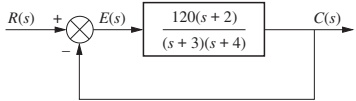
Assume closed-loop stable. There are no \(1/s\) factors in \(G(s)\).
Inputs:
- \(5 u(t)\) → \(R(s) = \dfrac{5}{s}\)
- \(5 t u(t)\) → \(R(s) = \dfrac{5}{s^2}\)
- \(5 t^2 u(t)\) → \(R(s) = \dfrac{10}{s^3}\)
Given in text: \(G(s)\) has dc gain \(\lim_{s \to 0} G(s) = 20\).
Step input:
\[ e_{step}(\infty) = \frac{5}{1 + \lim_{s\to 0} G(s)} = \frac{5}{1 + 20} = \frac{5}{21} \]
Ramp input:
\[ e_{ramp}(\infty) = \frac{5}{\lim_{s \to 0} s G(s)} = \frac{5}{0} = \infty \]
Parabolic input:
\[ e_{parabola}(\infty) = \frac{10}{\lim_{s \to 0} s^2 G(s)} = \frac{10}{0} = \infty \]
Example 7.3 – System with One Integrator
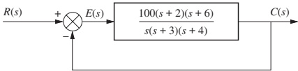
Now \(G(s)\) includes one \(1/s\) factor (one integrator). Assume closed-loop stable.
Given in text:
- \(\lim_{s \to 0} G(s) = \infty\) (due to integrator).
- \(\lim_{s \to 0} s G(s) = 100\).
Inputs:
\(5 u(t)\):
\[ e_{step}(\infty) = \frac{5}{1 + \lim_{s\to 0} G(s)} = \frac{5}{\infty} = 0 \]
\(5 t u(t)\):
\[ e_{ramp}(\infty) = \frac{5}{\lim_{s \to 0} s G(s)} = \frac{5}{100} = \frac{1}{20} \]
\(5 t^2 u(t)\):
\[ e_{parabola}(\infty) = \frac{10}{\lim_{s \to 0} s^2 G(s)} = \frac{10}{0} = \infty \]
So:
- Step: zero error
- Ramp: finite error
- Parabola: infinite error
Tip
Adding one integrator moved us from “good for steps only” to “steps perfect, ramps finite error”.
Skill-Assessment 7.1 – Stability First
Given:
\[ G(s) = \frac{10(s+20)(s+30)}{s (s+25)(s+35)} \]
- This has one integrator → candidate Type 1.
- Closed-loop is stable (stated in answer).
- Find steady-state errors for inputs \(15 u(t)\), \(15 t u(t)\), \(15 t^2 u(t)\).
Text answer:
- \(e_{step}(\infty) = 0\) (Type 1 → zero step error).
- \(e_{ramp}(\infty) = 2.1875\).
- \(e_{parabola}(\infty) = \infty\).
- For
\[ G(s) = \frac{10(s+20)(s+30)}{s^2 (s+25)(s+35)(s+50)} \]
The closed-loop system is unstable, so steady-state error formulas cannot be applied.
7.3 Static Error Constants
We now formalize the three “special limits” we’ve seen:
- Step: \(e_{step}(\infty) = \dfrac{1}{1 + \displaystyle \lim_{s \to 0} G(s)}\)
- Ramp: \(e_{ramp}(\infty) = \dfrac{1}{\displaystyle \lim_{s \to 0} s G(s)}\)
- Parabola: \(e_{parabola}(\infty) = \dfrac{1}{\displaystyle \lim_{s \to 0} s^2 G(s)}\)
Define static error constants:
Position constant:
\[ K_p = \lim_{s \to 0} G(s) \]
Velocity constant:
\[ K_v = \lim_{s \to 0} s G(s) \]
Acceleration constant:
\[ K_a = \lim_{s \to 0} s^2 G(s) \]
Then:
- \(e_{step}(\infty) = \dfrac{1}{1 + K_p}\)
- \(e_{ramp}(\infty) = \dfrac{1}{K_v}\)
- \(e_{parabola}(\infty) = \dfrac{1}{K_a}\)
Important
Larger static error constant \(\Rightarrow\) smaller steady-state error (for the corresponding input).
Example 7.4 – Using Static Error Constants
For each system in Figure 7.7, compute \(K_p, K_v, K_a\) and the corresponding steady-state error for step, ramp, and parabola.
System (a) – Type 0
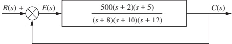
Given (from text calculations):
- \(K_p = \dfrac{500 \cdot 2 \cdot 5}{8 \cdot 10 \cdot 12} = 5.208\)
- \(K_v = 0\) (no integrator)
- \(K_a = 0\)
Hence:
- Step: \(e(\infty) = \dfrac{1}{1 + K_p} \approx 0.161\)
- Ramp: \(e(\infty) = \dfrac{1}{K_v} = \infty\)
- Parabola: \(e(\infty) = \dfrac{1}{K_a} = \infty\)
System (b) – Type 1
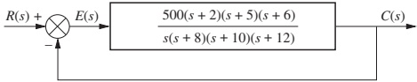
- \(K_p = \infty\) (integrator present)
- \(K_v = \dfrac{500 \cdot 2 \cdot 5 \cdot 6}{8 \cdot 10 \cdot 12} = 31.25\)
- \(K_a = 0\)
Hence:
- Step: \(e(\infty) = \dfrac{1}{1 + \infty} = 0\)
- Ramp: \(e(\infty) = \dfrac{1}{K_v} = \dfrac{1}{31.25} \approx 0.032\)
- Parabola: \(e(\infty) = \dfrac{1}{0} = \infty\)
System (c) – Type 2
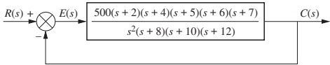
- \(K_p = \infty\)
- \(K_v = \infty\)
- \(K_a = \dfrac{500 \cdot 2 \cdot 4 \cdot 5 \cdot 6 \cdot 7}{8 \cdot 10 \cdot 12} = 875\)
Hence:
- Step: \(e(\infty) = 0\)
- Ramp: \(e(\infty) = 0\)
- Parabola: \(e(\infty) = \dfrac{1}{875} \approx 1.14 \times 10^{-3}\)
System Type – Formal Definition
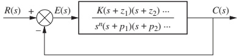
Consider a unity feedback system with forward path:
\[ G(s) = \frac{(s+z_1)(s+z_2)\cdots}{s^n (s+p_1)(s+p_2)\cdots} \]
System type is defined as the number of pure integrations in the forward path, i.e., the exponent \(n\) of \(1/s\):
- \(n = 0\) → Type 0 system
- \(n = 1\) → Type 1 system
- \(n = 2\) → Type 2 system
- etc.
System type determines the pattern of static error constants and steady-state errors.
Note
In design problems, first identify system type by counting integrators in \(G(s)\) for a unity feedback configuration.
Summary Table – Input vs. Type vs. Error
TABLE 7.2 – Relationships between input, system type, static error constants, and steady-state error
| Input | Error formula | Type 0 | Type 0 error | Type 1 | Type 1 error | Type 2 | Type 2 error |
|---|---|---|---|---|---|---|---|
| Step, \(u(t)\) | \(\dfrac{1}{1+K_p}\) | \(K_p =\) finite | \(\dfrac{1}{1+K_p}\) | \(K_p = \infty\) | 0 | \(K_p = \infty\) | 0 |
| Ramp, \(t u(t)\) | \(\dfrac{1}{K_v}\) | \(K_v = 0\) | \(\infty\) | \(K_v =\) finite | \(\dfrac{1}{K_v}\) | \(K_v = \infty\) | 0 |
| Parabola, \(\dfrac{t^2}{2}u(t)\) | \(\dfrac{1}{K_a}\) | \(K_a = 0\) | \(\infty\) | \(K_a = 0\) | \(\infty\) | \(K_a =\) finite | \(\dfrac{1}{K_a}\) |
Tip
Memorize the pattern rather than the whole table:
- Type 0: good for steps only (finite step error).
- Type 1: perfect steps, finite ramps, bad parabolas.
- Type 2: perfect steps and ramps, finite parabolas.
Skill-Assessment 7.2 – Practice with System Type
Given unity feedback:
\[ G(s) = \frac{1000 (s+8)}{(s+7)(s+9)} \]
Step 1: Find system type, \(K_p\), \(K_v\), \(K_a\).
- No factor of \(1/s\) → Type 0.
- \(K_p = \lim_{s \to 0} G(s) = \dfrac{1000 \cdot 8}{7 \cdot 9} \approx 127\).
- \(K_v = \lim_{s \to 0} s G(s) = 0\).
- \(K_a = \lim_{s \to 0} s^2 G(s) = 0\).
Step 2: Steady-state errors:
Step:
\[ e_{step}(\infty) = \frac{1}{1 + K_p} \approx 7.8 \times 10^{-3} \]
Ramp:
\[ e_{ramp}(\infty) = \frac{1}{K_v} = \infty \]
Parabola: \(\dfrac{1}{K_a} = \infty\).
7.4 Using Static Error Constants as Specifications
Engineers specify desired steady-state performance via \(K_p, K_v, K_a\), e.g.:
- “Design such that \(K_p = 1000\)”
- “Design a system with \(K_v = 20\)”
A specification like \(K_v = 1000\) implies:
System is stable.
System is Type 1 (only Type 1 has finite nonzero \(K_v\)).
The relevant test input is a ramp.
Steady-state error to a unit-slope ramp is
\[ e_{ramp}(\infty) = \frac{1}{K_v} = 0.001 \]
For a ramp with slope \(A\), error is \(\dfrac{A}{K_v}\).
Note
Just from the numeric value of \(K_p\) or \(K_v\), you can infer system type, test input, and error magnitude.
Example 7.5 – Interpreting \(K_p = 1000\)
Spec: \(K_p = 1000\).
This implies:
System is stable (otherwise \(K_p\) would be meaningless as a spec).
System is Type 0 (only Type 0 can have finite \(K_p\); Type 1 and above have \(K_p = \infty\)).
Test input is a step (position constant).
Steady-state error to a unit step is:
\[ e_{step}(\infty) = \frac{1}{1 + K_p} = \frac{1}{1001} \]
So the output will be within about 0.1% of the commanded step in steady state.
Example 7.6 – Designing Gain \(K\) from Steady-State Spec
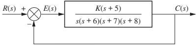
Problem
Given unity feedback with forward path \(G(s)\) as in figure, choose \(K\) so that there is 10% error in the steady state.
Step 1 – Identify system type and input
- From figure, forward path has one integrator → Type 1.
- Type 1: finite error only for ramp input.
- So “10% steady-state error” must refer to a ramp input.
Thus:
\[ e_{ramp}(\infty) = \frac{1}{K_v} = 0.1 \quad \Rightarrow \quad K_v = 10 \]
Step 2 – Compute \(K_v\) in terms of \(K\)
From figure’s \(G(s)\):
\[ G(s) = \frac{K \cdot 5}{s (s+6)(s+7)(s+8)} \]
Then:
\[ K_v = \lim_{s \to 0} s G(s) = \frac{K \cdot 5}{6 \cdot 7 \cdot 8} \]
Set equal to desired \(K_v\):
\[ 10 = \frac{5K}{6 \cdot 7 \cdot 8} \]
Solve:
\[ K = 10 \cdot \frac{6 \cdot 7 \cdot 8}{5} = 672 \]
Step 3 – Check stability (Routh-Hurwitz)
At \(K = 672\), closed-loop is stable (as given in text).
Warning
Meeting steady-state error specs with a large gain may degrade transient response or stability margins. Always check both.
Skill-Assessment 7.3 – Gain from Ramp Error
Given unity feedback:
\[ G(s) = \frac{K (s+12)}{(s+14)(s+18)} \]
System has no integrator → Type 0 → cannot have finite ramp error.
But text’s answer says \(K = 189\) for “10% error in steady state.”
Interpreting:
- For Type 0, finite error spec must be for step input.
- So \(e_{step}(\infty) = 0.1\).
Then:
\(K_p = \lim_{s \to 0} G(s) = \dfrac{12K}{14 \cdot 18}\).
\(e_{step}(\infty) = \dfrac{1}{1 + K_p} = 0.1\).
Solve for \(K_p\):
\(0.1 = \dfrac{1}{1 + K_p} \Rightarrow K_p = 9\).
Then:
\[ 9 = \frac{12K}{14 \cdot 18} \Rightarrow K = 9 \cdot \frac{14 \cdot 18}{12} = 189 \]
7.5 Steady-State Error Due to Disturbances
So far: we considered error due to the reference input \(R(s)\).
Now: consider disturbances \(D(s)\) entering between controller and plant.
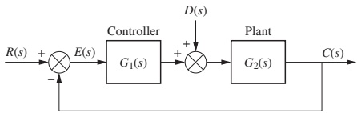
- \(G_1(s)\): controller + pre-plant dynamics
- \(G_2(s)\): plant (and maybe actuator)
- Disturbance \(D(s)\) enters between them.
We want to know how well feedback cancels the effect of \(D(s)\) on the error \(E(s)\).
Deriving Error with Disturbance
From the block diagram:
Output:
\[ C(s) = E(s) G_1(s) G_2(s) + D(s) G_2(s) \]
Error:
\[ E(s) = R(s) - C(s) \]
Substitute \(C(s)\) into error equation:
\[ E(s) = R(s) - \bigl[ E(s) G_1(s) G_2(s) + D(s) G_2(s) \bigr] \]
Solve for \(E(s)\):
\[ E(s) = \frac{1}{1 + G_1(s) G_2(s)} R(s) - \frac{G_2(s)}{1 + G_1(s) G_2(s)} D(s) \]
Apply final value theorem:
\[ \begin{aligned} e(\infty) &= \lim_{s \to 0} s E(s) \\ &= \lim_{s \to 0} \frac{s}{1 + G_1(s) G_2(s)} R(s) - \lim_{s \to 0} \frac{s G_2(s)}{1 + G_1(s) G_2(s)} D(s) \\ &= e_R(\infty) + e_D(\infty) \end{aligned} \]
Where:
- \(e_R(\infty)\): contribution from reference \(R(s)\) (already studied).
- \(e_D(\infty)\): contribution from disturbance \(D(s)\).
Step Disturbance – Expression for \(e_D(\infty)\)
Assume a step disturbance:
- \(d(t) = u(t)\)
- \(D(s) = \dfrac{1}{s}\)
The disturbance contribution to steady-state error is:
\[ e_D(\infty) = -\lim_{s \to 0} \frac{s G_2(s)}{1 + G_1(s) G_2(s)} D(s) = -\lim_{s \to 0} \frac{s G_2(s)}{1 + G_1(s) G_2(s)} \cdot \frac{1}{s} \]
Simplify:
\[ e_D(\infty) = -\lim_{s \to 0} \frac{G_2(s)}{1 + G_1(s) G_2(s)} \]
With some algebra (factor \(G_2(s)\) out of denominator), this can be rearranged as:
\[ e_D(\infty) = -\frac{1}{\displaystyle \lim_{s \to 0} \frac{1}{G_2(s)} + \lim_{s \to 0} G_1(s)} \]
Important
To reduce error from a step disturbance, either:
- Increase dc gain of controller \(G_1(s)\), or
- Decrease dc gain of plant \(G_2(s)\).
Disturbance as Input – Rearranged View
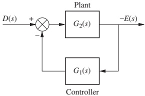
Set \(R(s) = 0\) and redraw:
- Input: disturbance \(D(s)\)
- Output: error \(E(s)\)
We can think of the block diagram as a system from \(D(s)\) to \(E(s)\).
To minimize steady-state \(E(s)\):
- Increase dc gain of \(G_1(s)\) → error is amplified and fed forward to cancel disturbance.
- Reduce dc gain of \(G_2(s)\) → disturbance effect on output smaller.
Example 7.7 – Disturbance Rejection
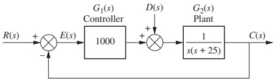
Problem
Find steady-state error component due to a step disturbance for the system in the figure.
Given in text:
- System is stable.
- \(G_1(s)\) has large dc gain; \(G_2(s)\) has infinite dc gain.
Using the formula:
\[ e_D(\infty) = -\frac{1}{\displaystyle \lim_{s \to 0} \frac{1}{G_2(s)} + \lim_{s \to 0} G_1(s)} \]
Given:
- \(\lim_{s \to 0} \dfrac{1}{G_2(s)} = 0\) (since \(G_2(0) = \infty\))
- \(\lim_{s \to 0} G_1(s) = 1000\)
Then:
\[ e_D(\infty) = -\frac{1}{0 + 1000} = -\frac{1}{1000} \]
So the steady-state error caused by a unit step disturbance is \(-10^{-3}\).
Note
Error magnitude is inversely proportional to controller dc gain.
Skill-Assessment 7.4 – Disturbance Practice
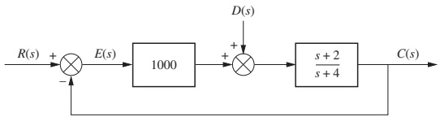
Given system and step disturbance \(D(s) = \dfrac{1}{s}\), evaluate disturbance-induced steady-state error.
Text answer:
\[ e_D(\infty) = -9.98 \times 10^{-4} \]
This is nearly \(-10^{-3}\), suggesting that the loop gain is around 1000 in dc.
Real-World ECE Application – Robot Positioning
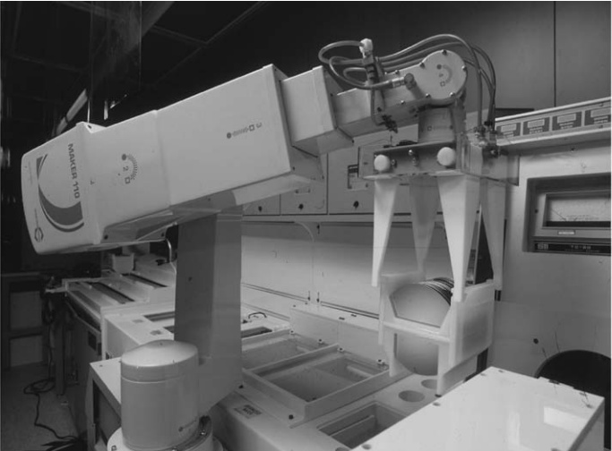
In semiconductor manufacturing:
- Robots move wafers or chips with high precision.
- Design spec may say:
- Step position change: final error \(< 0.01\) mm.
- Conveyor with constant speed: tracking error \(< 0.1\) mm.
Design approach:
- Use Type 1 or Type 2 systems with appropriate \(K_p, K_v\) to meet these specs.
- Add integrators in controller (PI / PID) to increase type and improve steady-state accuracy.
- Also design for good disturbance rejection to handle load changes, friction, etc.
Summary / Key Points
Steady-state error \(e_{ss}\) is the difference between input and output as \(t \to \infty\).
It is defined for stable systems only. Always check stability.
Standard test inputs model motion of position systems:
- Step (position), ramp (velocity), parabola (acceleration).
For unity feedback, steady-state error is conveniently computed from \(G(s)\):
\[ e(\infty) = \lim_{s \to 0} \frac{s R(s)}{1 + G(s)} \]
Static error constants summarize steady-state performance:
- \(K_p = \lim_{s \to 0} G(s)\), \(e_{step} = \dfrac{1}{1 + K_p}\).
- \(K_v = \lim_{s \to 0} s G(s)\), \(e_{ramp} = \dfrac{1}{K_v}\).
- \(K_a = \lim_{s \to 0} s^2 G(s)\), \(e_{parabola} = \dfrac{1}{K_a}\).
System type = number of integrators in \(G(s)\):
- Type 0: finite step error; ramp/parabola errors \(\infty\).
- Type 1: zero step error; finite ramp error; parabolic error \(\infty\).
- Type 2: zero step and ramp error; finite parabolic error.
Disturbance steady-state error (for step disturbances) can be reduced by increasing controller dc gain \(G_1(0)\).
Important
Control design is a trade-off: more integrators / higher gain improve steady-state error but can harm stability and transient response.
Formula Summary – Steady-State Error
General
Error signal:
\[ E(s) = R(s) - C(s) \]
Closed-loop: \(C(s) = T(s) R(s)\) ⇒ \(E(s) = R(s)[1 - T(s)]\).
Final value theorem (for stable systems):
\[ e(\infty) = \lim_{t \to \infty} e(t) = \lim_{s \to 0} s E(s) \]
Unity Feedback (Reference Input Only)
From open-loop \(G(s)\):
\[ E(s) = \frac{R(s)}{1 + G(s)} \]
\[ e(\infty) = \lim_{s \to 0} \frac{s R(s)}{1 + G(s)} \]
Static error constants:
\[ K_p = \lim_{s \to 0} G(s), \quad K_v = \lim_{s \to 0} s G(s), \quad K_a = \lim_{s \to 0} s^2 G(s) \]
Steady-state errors:
Step \(u(t)\):
\[ e_{step}(\infty) = \frac{1}{1 + K_p} \]
Ramp \(t u(t)\):
\[ e_{ramp}(\infty) = \frac{1}{K_v} \]
Parabola \(\dfrac{t^2}{2} u(t)\):
\[ e_{parabola}(\infty) = \frac{1}{K_a} \]
Disturbance Steady-State Error (Step Disturbance)
With disturbance \(D(s)\) between \(G_1\) and \(G_2\):
\[ e_D(\infty) = -\lim_{s \to 0} \frac{s G_2(s)}{1 + G_1(s) G_2(s)} D(s) \]
For step \(D(s) = \dfrac{1}{s}\):
\[ e_D(\infty) = -\frac{1}{\displaystyle \lim_{s \to 0} \frac{1}{G_2(s)} + \lim_{s \to 0} G_1(s)} \]
Steady-State Errors – Interactive Deck
Warm-Up: Final Value Theorem in Code
Use Python to compute
\[ e(\infty) = \lim_{s\to 0} s E(s) \]
for a given closed-loop \(T(s)\) and step input \(R(s) = 1/s\).
Edit the numerator/denominator and re-run.
Tasks:
- Change
num_Tand/orden_Tand see how \(e_{ss}\) changes. - Try to make \(e_{ss} = 0\). What condition on \(T(0)\) does that imply?
Interactive: Error from Open-Loop \(G(s)\) (Unity Feedback)
Recall for unity feedback:
\[ e(\infty) = \lim_{s\to 0} \frac{s R(s)}{1 + G(s)}. \]
Below, you can define \(G(s)\) and choose the test input type.
Questions:
- For which input types do you get finite error with this \(G(s)\)?
- How does increasing \(K\) affect the error?
- What system type is this (Type 0, 1, or 2)? How does that match your results?
Exploring System Type via Integrators
Now let’s add integrators and see how system type affects \(e_{ss}\).
We define
\[ G(s) = \frac{K}{s^n (s+2)(s+3)}, \]
where n is the number of integrators → system type \(= n\).
Try this:
- Fix
K2 = 50and changen_integratorsfrom 0 → 1 → 2 → 3. - For each
input_type2, note when error becomes zero / finite / infinite. - Connect your observations to Table 7.2 (Type 0/1/2 behavior).
Static Error Constants \(K_p, K_v, K_a\) – Interactive
We’ll compute
\[ K_p = \lim_{s\to 0} G(s),\quad K_v = \lim_{s\to 0} s G(s),\quad K_a = \lim_{s\to 0} s^2 G(s) \]
for a parameterized \(G(s)\).
Let
\[ G(s) = \frac{K(s+z)}{s^n (s+p_1)(s+p_2)}. \]
viewof n_type = Inputs.range([0, 2], {step: 1, value: 0, label: "System type n"})
viewof K3 = Inputs.range([0, 200], {step: 20, value: 100, label: "Gain K"})
viewof z = Inputs.range([0, 20], {step: 2, value: 10, label: "Zero z"})
viewof p1 = Inputs.range([1, 20], {step: 2, value: 5, label: "Pole p1"})
viewof p2 = Inputs.range([1, 20], {step: 2, value: 7, label: "Pole p2"})Questions:
- For each
n_type, which of \(K_p, K_v, K_a\) is zero, finite, or infinite? - How does changing
z,p1,p2affect the finite constants? - For your chosen parameters, what are \(e_{step}, e_{ramp}, e_{parabola}\)?
Visualizing Step Response vs. \(K_p\) (Simple Approximation)
We’ll approximate steady-state behavior by evaluating \(T(0)\) for a step, where
\[ T(s) = \frac{G(s)}{1 + G(s)}. \]
If the input step amplitude is 1, then steady-state output ≈ \(T(0)\), and
\[ e_{ss} \approx 1 - T(0). \]
Try:
- Increase
K_step. How do \(T(0)\) and \(e_{ss}\) change? - Interpret \(T(0)\) physically (gain from input to output for DC).
Ramp Tracking – Simulated Output and Error
Let’s simulate time-domain response to a ramp input for a Type 0 vs Type 1 system and visualize steady-state error.
We’ll use a simple numerical approximation here.
Questions:
- With no integrator (Type 0), does the error seem to grow without bound?
- With an integrator (Type 1), does the error approach a finite constant?
- How does increasing
K_rampaffect the ramp error for Type 1?
Disturbance Rejection – Static Formula Exploration
For a disturbance entering between \(G_1\) and \(G_2\), for a step disturbance \(D(s) = 1/s\),
\[ e_D(\infty) = -\frac{1}{\displaystyle \lim_{s\to 0} \frac{1}{G_2(s)} + \lim_{s\to 0} G_1(s)}. \]
Here we’ll assume
\[ G_1(s) \approx K_1, \quad G_2(s) \approx K_2 \]
around DC, and compute \(e_D(\infty)\) interactively.
Explore:
- Increase
K1while keepingK2fixed. What happens toeD? - Decrease
K2(weaker plant gain). How does that affecteD? - Relate to the block diagram interpretation: why does high controller gain improve disturbance rejection?
Disturbance Rejection – Time-Domain Simulation
Now let’s simulate a disturbance step entering the plant input and see how the output error behaves.
We consider the canonical structure:
\[ G_1(s) = K_1, \quad G_2(s) = \frac{K_2}{s+1}. \]
Try:
- Increase
K1_d. Does steady-state error magnitude decrease? - Change
K2_d. How does that affect the shape and final value ofE(t)? - Compare with the static formula you just explored.
Challenge: Design \(K\) for a Desired Ramp Error
Suppose you have unity feedback with
\[ G(s) = \frac{K}{s (s+2)(s+3)}, \]
which is Type 1.
You want a 10% error for a unit ramp input, i.e.,
\[ e_{ramp}(\infty) = 0.1. \]
Use the interactive code below to:
- Compute \(K_v = \lim_{s\to 0} s G(s)\).
- Solve for \(K\) such that \(1/K_v = 0.1\).
- Verify with a numerical simulation of a ramp response.
Now plug that \(K\) into the previous ramp simulation slide by editing G(s) there to match this form and see if the final error matches \(\approx 0.1\).
Reflection – What Did You Observe?
Use this slide as a checklist:
- How does the number of integrators (system type) influence which inputs have zero / finite / infinite error?
- How does increasing gain \(K\) change steady-state error for:
- Type 0 system with step input?
- Type 1 system with ramp input?
- How do the static error constants \(K_p, K_v, K_a\) help you quickly predict error behavior?
- How does increasing controller dc gain help with disturbance rejection?
Consider writing down:
- One experiment that surprised you.
- One pattern you discovered yourself while playing with the sliders.